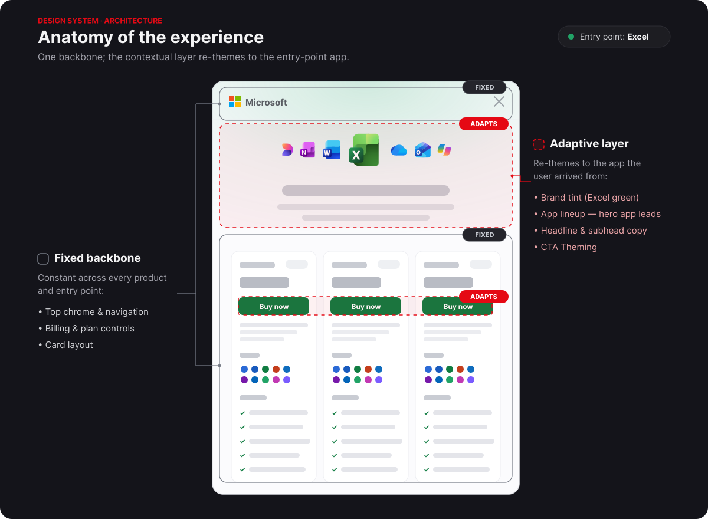
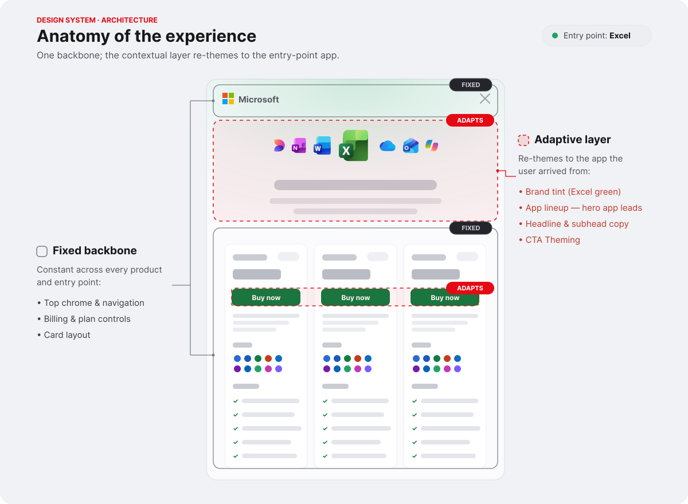
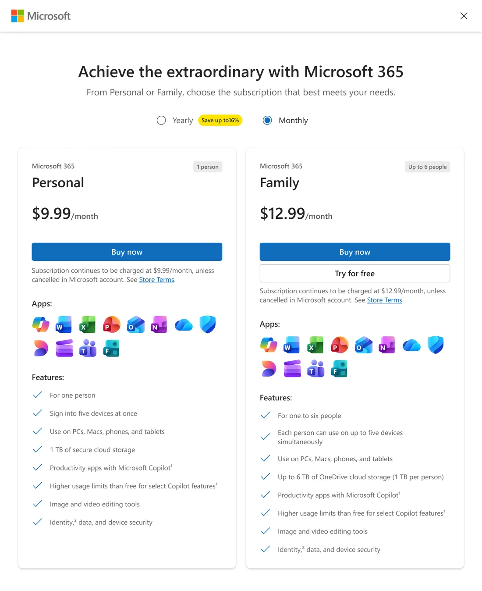
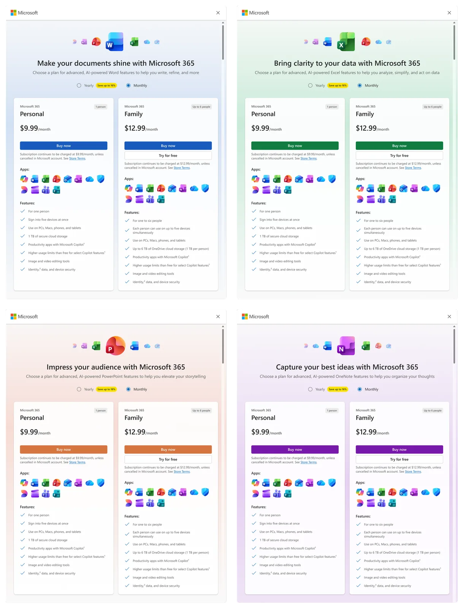

The problem
People reached the M365 plan-comparison modal from all over: Copilot, Word, Excel, PowerPoint, Outlook, OneNote, OneDrive and more. But they all landed in the same generic experience that ignored where they'd just come from.
The strategic question
“How might we make the M365 plan-comparison modal feel contextual everywhere, without fragmenting it?”
Challenge
Four goals pulled against each other:
- Consistency: it had to stay one coherent platform.
- Relevance: every entry point wanted to feel native to its product.
- Accessibility: every theme had to clear the bar, dark mode included.
- Scalability: it had to absorb future products without a redesign.
It grew from one theme to thirteen. Each one had accessibility and dark mode built in from the start, not bolted on later.
Design-system thinking
The core move was to decide, up front, what stays fixed and what adapts. That single decision is what let the modal feel contextual and coherent at the same time.
Fixed (the M365 plan-comparison modal's backbone)
- Layout
- Navigation
- Underlying structure
Adaptive (the contextual layer)
- Branding & visual identity
- Headers
- Illustrations & color


Key design decisions
1 · How should the dialog feel contextual without becoming fragmented?
I built a flexible theming framework that feels native to each product while staying consistent across all of them.
2 · What should remain fixed, and what should adapt?
I separated the foundations from the expression. Interactions stay consistent, while branding, content, and visuals adapt.
3 · How should the system scale across future products?
A reusable framework that absorbs new products, themes, and accessibility needs without a redesign.
4 · How do we maintain quality at scale?
Design standards and validation so every theme met the same usability and accessibility bar.
My process
- Theme architecture: how a theme is defined and composed.
- Component inventory: what already existed and what had to flex.
- Token strategy: each app has a brand palette (10–160), so I pulled tokens from that set to keep things easy to scale.
- Theme governance: sticking to each brand's own guidance and palette made new apps much easier for engineering to add.
- Accessibility reviews: contrast, dark mode, and spec work across all 13.


Cross-functional collaboration
I worked with developers on keeping the theming maintainable, accessibility teams on holding the bar across themes, PMs on which contexts to prioritize, and researchers. To keep everyone aligned, I defined where the platform was allowed to customize and wrote the framework teams used to add new products without losing consistency or quality.
Impact
What I'd do differently
The biggest lesson was that scalability doesn't guarantee consistency. The system leaned on shared tokens and gradients, but each product rendered them a little differently, so getting things to feel cohesive still took deliberate, surface-by-surface work.